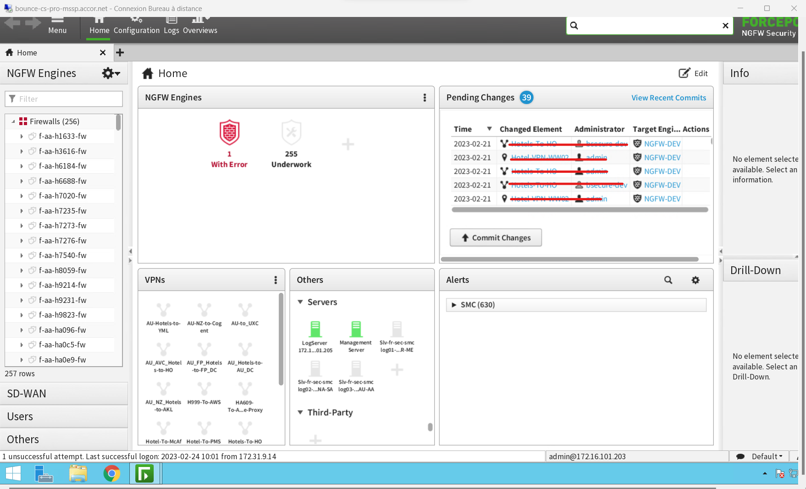

Stage
Description de l'enreprise :
Dénomination : Bsecure
Adresse : 61 AV SECRETAN, 75019 PARIS
Forme juridique : SARL unipersonnelle
Taille: PME
Effectif : 20 salariés
Secteur d'activité : Cybersécurité / DevOps
Historique :
Bsecure est un cabinet indépendant d’expertise en cybersécurité des applications et des infrastructures crée en 2009.
L'entreprise offre des services de devSECops alliant sécurité et développement.
L'entreprise fait aussi des audits de sécurité et de l'assistance RSSI.
RGPD :
Bsecure a un vrai intérêt en vers la RGPD car elle doit s'assurer de la sécurité de ses entreprises clientes.
Bsecure est aussi partenaire avec :
RSE :
Bsecure est très axée sur la RSE avec un vrai respect et un confort donnés à ses employés.
Les missions :
Contexte :
Le but du projet est de coder des firewalls virtuels (pare-feu) de nouvelle génération en Python sur la plateforme AWS en utilisant le système de FAAS (Function as a Service) pour sécuriser les systèmes informatiques du groupe ACCOR (entreprise cliente de Bsecure). C’est donc un projet complet car il faut pour cela maîtriser la programmation et connaître dans les détails le réseau et le fonctionnement d’un système informatique.
{kind=link}
Contraintes & difficultés :
- Des concepts poussés en réseaux
- Une API complexe
- le travail en équipe


Conclusion
Durant ce stage, j’ai appris beaucoup de nouvelles choses qui ne faisaient pas partis de mon domaine d’apprentissage (des concepts en réseau …). Le concept de nouvelle génération de firewall m’a fait comprendre les enjeux actuels en termes de sécurité au sein des systèmes informatique
Note de stage